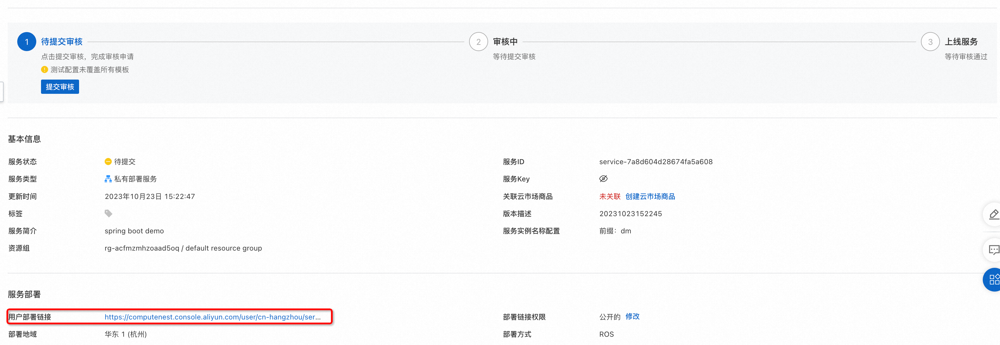
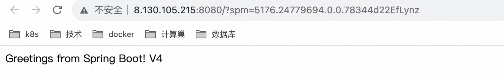

服务模板说明文档
服务说明
本文介绍基于docker部署的SpringBoot单机ecs服务快速上手流程，本示例对应的Git仓库地址：springboot-ecs-docker-demo。
本示例会自动的构建计算巢服务，具体的服务构建流程为:
- 上传docker镜像并构建计算巢容器镜像部署物
- 创建计算巢服务并关联容器镜像部署物
创建过程大约持续1分钟，当服务变成待提交后构建成功。
服务架构
本部署架构为单机ecs部署，通过公网ip 8080端口访问。

服务构建计费说明
测试本服务构建无需任何费用，创建服务实例涉及的费用参考服务实例计费说明。
服务实例部署流程
部署参数说明
| 参数组 | 参数项 | 说明 |
|---|---|---|
| 服务实例 | 服务实例名称 | 长度不超过64个字符，必须以英文字母开头，可包含数字、英文字母、短划线（-）和下划线（_）。 |
| 地域 | 服务实例部署的地域。 | |
| 付费类型 | 资源的计费类型：按量付费和包年包月。 | |
| ECS实例配置 | 实例类型 | 可用区下可以使用的实例规格。 |
| 实例密码 | 长度8-30，必须包含三项（大写字母、小写字母、数字、 ()`~!@#$%^&*-+=|{}[]:;'<>,.?/ 中的特殊符号）。 | |
| 网络配置 | 可用区 | ECS实例所在可用区。 |
部署步骤
- 部署链接 
- 单击部署链接，进入服务实例部署界面，根据界面提示，填写参数完成部署。

- 参数填写完成后可以看到对应询价明细，确认参数后点击下一步：确认订单。

- 确认订单完成后同意服务协议并点击立即创建。
进入部署阶段。

- 等待部署完成后就可以开始使用服务，进入服务实例详情点击visitUrl。

- 部署结果： 
服务详细说明
本文通过将spring-boot构建后，将deploy.sh和application.jar打包成package.tgz,对其中的application.jar打包成docker镜像, 通过计算巢部署物上传为容器镜像部署物，在模版中使用docker命令进行服务启动。
templates/template.yaml主要由三部分组成 1. Parameters定义需要用户填写的参数，包括付费类型，实例规格和实例密码可用区参数。 2. Resources定义需要开的资源，包括新开的vpc, vswitch和ecs实例, 以及执行命令的定义,其中{{ computenest::acr::dockerconfigjson }}是下载docker所需secret的占位符，计算巢服务会在部署时替换为对应的下载秘钥。{{ computenest::acrimage::demo }}是容器镜像仓库的占位符，计算巢服务会替换成对应的镜像仓库地址。 3. Outputs定义需要最终在计算巢概览页中对用户展示的输出。
服务配置
服务交付
其他
© 2009-2022 Aliyun.com 版权所有